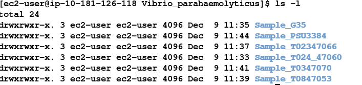
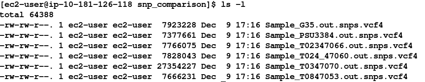
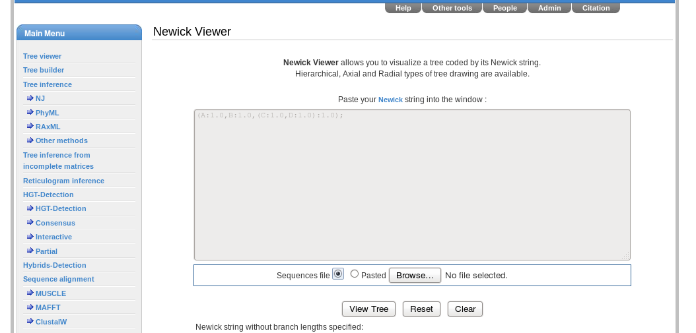

Part 5. Comparative Analysis
Introduction:

In the previous sections you have been taken through the steps required to:
- QC and filter Illumina data
- Remap Illumina short-read data to a reference sequence
- View the results in IGV
- Identify SNPs and Indels in an automated fashion using samtools and bcftools
- Determine whether SNPs result in synonymous or non-synonymous changes in the corresponding amino acid
- Extract unmapped reads
- Assemble unmapped reads and obtain assembly statistics
- Annotate unmapped reads using Pfam, RAST and/or BLAST
- Assemble a bacterial genome de-novo using SPAdes
- Obtain assembly statistics
- Annotate as per the unmapped reads (where computationally feasible).
Now we want you to do the same on a set of Vibrio parahaemolyticus strains which have been isolated and sequenced. There are six strains available depending on how much time is available and enthusiasm you have - choose a number of strains (at least 2) as we want to run some comparisons.
The strains can be found in:
cd ~/workshop_materials/genomics_tutorial/data/sequencing/Vibrio_parahaemolyticus

Under each Sample directory is a subdirectory called raw_illumina_reads which contains the fastq files.
For remapping, the reference can be found in the folder:
~/workshop_materials/genomics_tutorial/data/reference/Vibrio_parahaemolyticus_RIMD_2210633_uid57969
(Remember, you will need to create an index first).
For each strain, make a list of:
- SNPs, Indels and their effects (from the remapping)
- Missing genes (from the remapping)
- Novel plasmids and/or genes (Pfam domains are the easiest way to do this via denovo assembly of unmapped reads - when performing the assembly - don’t specify the k-mers SPAdes will choose appropriate ones.)
Once completed, see if you can predict what the phenotype of these bacteria might be. Then proceed to the final part of the tutorial where we will compare the results from all of these strains.
N.B. It is recommended that you follow the same directory naming convention we have followed here (i.e. one for remapping to the reference, another for assembly of unmapped reads and a final one for the denovo assembly).
These tasks may take you several days. However, remember that all of the basic procedures are detailed in the previous sections - only the input FASTQ files will have changed. Feel free to refer to these previous tasks to remind yourself of the commands and parameters. By all means feel free to play around with different parameters if you wish, although remember that the results may differ from those you see here.
Just to give you some guidance:
You should find that strain Sample_T0347070 yields many more SNPs than other strains.
You may find that some scripts and programs run more slowly because of these extra differences and larger datasets.
Also, if you find the de novo assembly process causes your session to end, the chances are that SPAdes has caused your instance to run out of memory. If this happens, increase the minimum k-mer size in the spades.py command line.
Here we will use a script to compare the variants called in each sample. Ensure you are in the
~/workshop_materials/genomics_tutorial/data/sequencing/Vibrio_parahaemolyticus directory
First of all, let’s make a directory to store the results of the comparison:
mkdir snp_comparison
We need a copy of all of the vcf4 files we created here. This is a quick way to do it - paste this in as one command
for sample in Sample*
do
cp -v $sample/remapping_to_reference/out.snps.vcf4 snp_comparison/\$sample.out.snps.vcf4
done
cd snp_comparison
Note that the copy commands may require modification depending on where you have saved the variant call results.
Our directory contents should look something like:

We’ll now set up some variables so we don’t have to type long path names
ref=~/workshop_materials/genomics_tutorial/data/reference/Vibrio_parahaemolyticus_RIMD_2210633_uid57969/Vibrio_parahaemolyticus_RIMD_2210633_uid57969.fasta
gff=~/workshop_materials/genomics_tutorial/data/reference/Vibrio_parahaemolyticus_RIMD_2210633_uid57969/Vibrio_parahaemolyticus_RIMD_2210633_uid57969.gff
samples=`ls *.vcf`
We can now use $ref instead of the long path to our reference and $gff for the feature file. e.g.
head $ref
echo $samples
When we are happy our variables are correct then run:
snp_comparator.pl 10 $ref $gff $samples > snp_comparison.txt
Looking at the snp_comparison.txt file (either in a text editor, or in a spreadsheet):
If you have chosen different samples - you will get different results of course.
Here we can see the chromosome ID, the position in bp, the reference base and the base at each position as well as the gene (if any) the variant occurs in as well as the effect (silent, non-silent or indel).
Obtaining a phylogeny based on synonymous SNPs only:
How are the strains related on the basis of these variants? We can ask a number of questions, but if we are looking at the long-term evolutionary history of the strains we should only look at synonymous (i.e. silent) mutations as these should not confer a significant selective advantage to any strain. Using the data snp_comparison.txt file, we can form ‘pseudo-sequences’ using the script snp2tree_fullsequence.pl
These are concatenated bases consisting of only those positions which are silent across all strains. It is essentially the same as turning each column of each strain in the snp_comparison.txt file into a FASTA entry.
snp2tree_fullsequence.pl snp_comparison.txt > synonymous_tree.fasta
Examine the contents of the tree.fasta file. We can then treat this file as an alignment (since each base in each sequence is at the same position on the chromosome) and pass it to a phylogeny program called FastTree. FastTree will take an input alignment and output a Newick formatted tree (http://en.wikipedia.org/wiki/Newick_format). \
FastTree -nt -gtr < synonymous_tree.fasta > synonymous_tree.newick
Now we can visually view this tree by using an online tool.
firefox http://www.trex.uqam.ca/index.php?action=newick

Either paste the contents of the .newick file into the window or select ‘Sequences file’ and load the file through the browser. Then select ‘View Tree’
Advanced task:
Copy the snp2tree_fullsequence.pl script to this directory: (~/workshop_materials/genomics_tutorial/data/sequencing/Vibrio_parahaemolyticus/snp_comparison) and modify it so that it selects positions containing only non-silent mutations (not indels as these modify the alignment). Generate a new alignment and compare the resulting tree against the silent mutations.
You will need to have some experience of programming in the Perl language to do this.